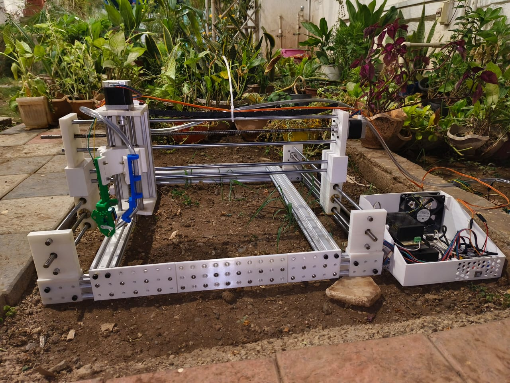
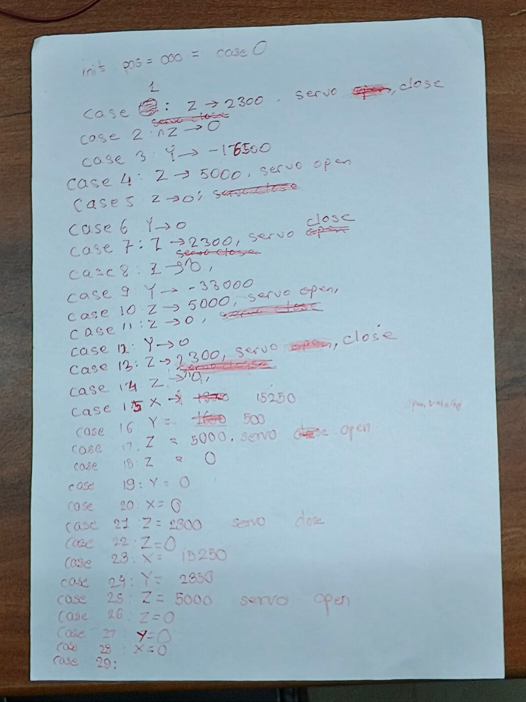

Welcome to the Home Farmer Project
This project aims to revolutionize sustainable development through robotics, focusing on home farming solutions.
This project also aims to help society get fresh, healthy vegetables
Project Report Written By The Rooftop Farmers (formerly Team Green Warriors), India

The Rooftop Farmers Logo
About Us
The Rooftop Farmers, a duo of school students, are on a mission to revolutionize sustainable development through robotics. With a keen interest in environmental conservation, they're making a difference with their passion and creativity.
VIHAAN
Loves Robotics, loves to create new things, and is also passionate about playing video games. Passion in coding makes him a code freak. He has made games on unity like Tic tac Toe, Sudoku, and more.
YOGESHWAR
Interested in building different structures. He prepares different designs like aircraft models. He is very much interested in Robotics and Electronics. He loves to create different models and has participated in several competitions.
Group Photo with Home Farmer
The Problem
A Brief Description About the Current Scenario
The current scene regarding land pollution and soil infertility paints a concerning picture of environmental degradation. Rampant use of chemical fertilizers has led to soil degradation, impacting crop yields and food quality.
The Global Warming Effect
Global warming makes land pollution and soil problems worse. It changes rain and causes droughts or floods, harming soil. The heat also makes soil worse faster. This makes growing food in cities even harder.
The Urban challenge
The challenge of urban food production, where space constraints and busy lifestyles make traditional gardening difficult. This problem is significant due to the growing need for sustainable food production in urban environments.
The Solution
Problem Statement:
Our project, Home Farmer, aims to address the pressing issues of soil degradation, land pollution, and the growing need for sustainable urban farming. These challenges are critical due to rising urbanization and climate change.
Why This Problem
We chose this problem because conventional farming practices often contribute to soil degradation and pollution through the heavy use of chemical fertilizers, pesticides, and intensive land use.
Robotic Solution
Home Farmer is a cutting-edge robotic solution designed to revolutionize farming practices. It is capable of autonomously planting seeds, nurturing crops, providing daily water requirements, and ensuring optimal growth conditions.
Value of the Robotic Solution
The implementation of Home Farmer in real-life scenarios offers immense value. It significantly reduces soil erosion, conserves water through precise irrigation, eliminates the need for harmful chemicals, and empowers individuals to grow food independently.
Importance of the Project
Home Farmer is crucial in addressing global challenges related to food production, environmental sustainability, and urban development. By promoting sustainable farming practices, reducing pollution, and enabling home-grown food, it brings positive change to society.
Home Farmer V1
Home Farmer - Origins & Overview
Origins of the Idea:
The concept of Home Farmer emerged from our deep concern about the environmental impact of traditional farming methods and the challenges posed by urbanization on agricultural practices.
OUR MISSION
To empower individuals with the tools and knowledge to cultivate their own food at home, we harness accessible and innovative technology. Our aim is to foster sustainability and food independence for everyone.
OVERVIEW
Our project revolves around the development of a Home Farming Robot, a sophisticated yet user-friendly system designed to enable individuals to grow their own food at home autonomously and efficiently.
Our Journey
How we got the idea for our solution
When we found a pricey commercial farmbot used in big farms, we liked its features but couldn't afford it. So, we decided to make our own version which can be used in homes. We wanted something affordable and easy to use.
Mechanical Construction - V2
- 3D printed parts provide structural support and secure aluminum profiles.
- Aluminum profiles provide horizontal support.
- Belt and trolley provide movement for X and Y axes.
- Allen bolts connect aluminum profiles to 3D printed parts.
- Linear bearings and lead screw facilitate Z axis movement.
- Ball bearings reduce rotational friction for Z axis.
- Couplers connect stepper motors to pulley.
- The belt goes around 1 axis, with the ends connecting to the trolley, which is then moved by the stepper motors.

Coding of the Solution
The code automates movement with stepper motors and a servo, looping through predefined actions based on the XY-coordinate system. It's part of a robotics or automation project, requiring sensors and actuators for optimal performance.
Scribble of initial code
Social Impact of the Product
The Home Farmer robot helps everyone grow fresh, healthy vegetables right at home, even in small spaces like apartments. This means people get safe, chemical-free food, reducing the need for store-bought produce and fostering sustainability.
Project Report
Latest Project Report
For more reports, click here!
Components
Component List
| Component | Quantity | Usage of Component |
|---|---|---|
| DS1307 RTC | 1 | For Time display on LCD |
| 20x4 I2C LCD | 1 | For Display of Menu, features, and for selection of action |
| Arduino UNO | 1 | Arduino UNO specifically to host the CNC Shield V3 |
| CNC Shield V3 | 1 | To host the Stepper Motor drivers needed |
| DRV 8825 Stepper Motor Driver | 4 | For Proper functioning of Stepper Motors |
| NEMA 17 Stepper Motor | 4 | 2 for movement of x axis, 1 for y axis, and 1 for z axis. |
| DHT11 | 1 | To measure the humidity and temperature of surrounding |
| Soil Moisture Sensor | 1 | To measure soil moisture for plant health |
| Encoder | 1 | For user input to select an action on LCD |
| Switch | 1 | Reset Button for emergency stop or homing |
| Fan (12v) | 1 | To cool the DRV8825 Stepper motor driver |
| Servo Motor (180 Degrees) | 1 | To pick up the seeds and plant them |
| Water Pump | 1 | To water the plants when called for |
Components - Additional Information
DS1307 RTC
- I2C Address -> 0x68
- Data Pins -> SDA (A4), SCL (A5) for I2C Protocol
- Requires Li-ion coin battery for offline time backup
- Requires external library - <uRTCLib.h>
20x4 I2C LCD
- I2C Address -> 0x27
- Data Pins -> SDA (A4), SCL (A5)
- Requires external library - <LiquidCrystal_I2C.h>
CNC Shield V3
- Supports 4 A4988 or DRV8825 Stepper motor Drivers
- Is a PCB that is placed exactly on top of the Arduino UNO board
- Supports Axis cloning
DHT11
- Requires external library - <dht.h>
- Has sampling rate of 1Hz, meaning it can provide new information every 1 second.
- Temperature is given in Celsius by the DHT, but we can use the formulae to convert it into Fahrenheit or Kelvin.
- Data Pins -> Middle Pin goes to a Digital Input Pin
Soil Moisture Sensor
- Provides Analog and Digital Data
- Pin -> A0 goes to any analog pin for analog input or D0 to any Digital pin for Digital Input
NEMA 17 Stepper Motor
- Provides precise movement without the sacrifice of speed or movement range
- Requires a stepper motor driver to properly function
- Has external libraries, but can function without them
DRV 8825 Stepper Motor Driver
- Has an output drive capacity of up to 45V, allowing for control of bi-polar stepper motor, such as NEMA 17.
- Placed directly onto the CNC Shield V3
Incremental Encoder
- Rotary encoders can rotate 360° without stopping, whereas potentiometers can only rotate 3/4 of the circle.
- Data pin -> CLK and DT for the rotary movement and SW for Switch inbuilt
Mechanical Components - Additional Information
2040 Aluminum Profile
- Used for Basic Structure of the robot
- Is connected using T-Nut and Bolt
3D Printed Materials
- All Materials were made on Tinkercad and can be found here.
T-Nut and Bolts
- Keeps stability in between the profiles, and prevents it from falling apart
Lead Screw, Belt, Pulley, and Trolley
- Helps in movement of all axes
- Lead Screw allows for precision in the z axis.
- Pulley connects to stepper motor and the opposite end to host the belt, which is connected to the trolley for movement
List of Sources
- Operate Library for Arduino
- https://lastminuteengineers.com/ds1307-rtc-arduino-tutorial/
- https://lastminuteengineers.com/arduino-1602-character-lcd-tutorial/
- https://www.youtube.com/watch?v=Hb6WJTX5X_E (CNC Making Machine)
- https://www.youtube.com/watch?v=uNkADHZStDE (Farm Bot)
- https://www.youtube.com/watch?v=tkOhH9OUMto (Lead Screw Arrangement)
- https://www.youtube.com/watch?v=zUb8tiFCwmk (CNC Arduino Shield)
- https://www.youtube.com/watch?v=JlhjcTh4yts (CNC Arduino Shield)
- CNC 3-Axis Shield PDF (handsontec)
- CNC Shield Guide (makerstore)
- Stepper Motor (Wikipedia)
- https://www.youtube.com/watch?v=eyqwLiowZiU (Stepper Motor Working)
- https://www.youtube.com/watch?v=5CmjB4WF5XA (Stepper Motor Driver A4988)
- https://www.youtube.com/watch?v=BV-ouxhZamI (Stepper Motor Driver DRV)
- https://www.youtube.com/watch?v=rAIXfkRIQ5s (Stepper Motor Driver DRV)
- DRV8825 Tutorial (lastminuteengineers)
- Using CNC Shield V3 with Arduino IDE (Arduino Forum)
- AccelStepper Library (Arduino Reference)
- Tinkercad - For designing parts